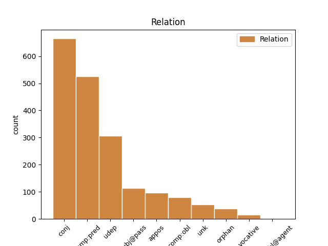
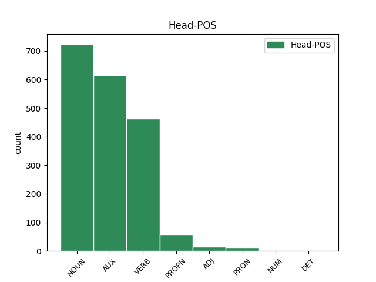
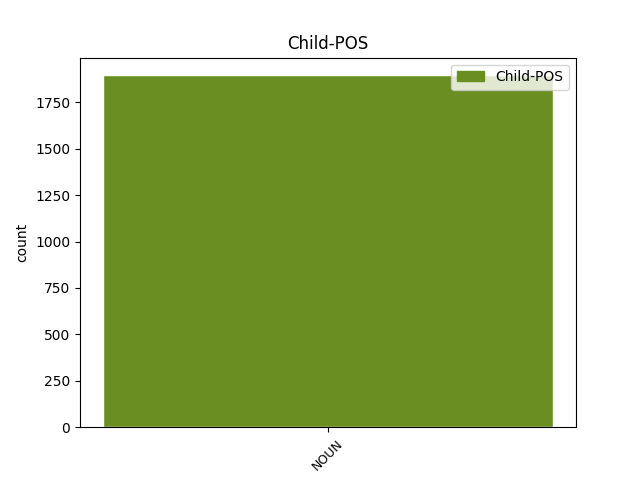

Distribution of features within this leaf



Agreement Rules sorted by frequency.
- When the dependent token is the conjunct(conj) of the head token, and the dependent token is NOUN.
1 Príslušníka príslušník NOUN SSms4 Animacy=Anim|Case=Acc|Gender=Masc|Number=Sing 0 _ _ _
2 vojenskej _ _ _ _ 0 _ _ _
3 polície _ _ _ _ 0 _ _ _
4 , _ _ _ _ 0 _ _ _
5 poľovníka poľovník NOUN SSms4 Animacy=Anim|Case=Acc|Gender=Masc|Number=Sing 1 conj _ _
6 a _ _ _ _ 0 _ _ _
7 manželský _ _ _ _ 0 _ _ _
8 pár _ _ _ _ 0 _ _ _
9 v _ _ _ _ 0 _ _ _
10 stredných _ _ _ _ 0 _ _ _
11 rokoch _ _ _ _ 0 _ _ _
12 . _ _ _ _ 0 _ _ _
1 Vytvoríme _ _ _ _ 0 _ _ _
2 kapitálotvornú _ _ _ _ 0 _ _ _
3 vrstvu _ _ _ _ 0 _ _ _
4 , _ _ _ _ 0 _ _ _
5 ktorá _ _ _ _ 0 _ _ _
6 bude byť AUX VBesc+ Aspect=Imp|Mood=Ind|Number=Sing|Person=3|Polarity=Pos|Tense=Fut|VerbForm=Fin 0 _ _ _
7 zárukou záruka NOUN SSfs7 Case=Ins|Gender=Fem|Number=Sing 6 comp:pred _ _
8 blaha _ _ _ _ 0 _ _ _
9 ľudu _ _ _ _ 0 _ _ _
10 , _ _ _ _ 0 _ _ _
11 presvedčivo _ _ _ _ 0 _ _ _
12 hlásal _ _ _ _ 0 _ _ _
13 tvorca _ _ _ _ 0 _ _ _
14 blaha _ _ _ _ 0 _ _ _
15 svojich _ _ _ _ 0 _ _ _
16 prívržencov _ _ _ _ 0 _ _ _
17 . _ _ _ _ 0 _ _ _
1 Keď _ _ _ _ 0 _ _ _
2 zistil _ _ _ _ 0 _ _ _
3 , _ _ _ _ 0 _ _ _
4 že _ _ _ _ 0 _ _ _
5 je _ _ _ _ 0 _ _ _
6 obkľúčený _ _ _ _ 0 _ _ _
7 a _ _ _ _ 0 _ _ _
8 má _ _ _ _ 0 _ _ _
9 sa _ _ _ _ 0 _ _ _
10 vzdať _ _ _ _ 0 _ _ _
11 , _ _ _ _ 0 _ _ _
12 zabil zabiť VERB VLdscm+ Animacy=Anim|Aspect=Perf|Gender=Masc|Number=Sing|Polarity=Pos|Tense=Past|VerbForm=Part 0 _ _ _
13 sa _ _ _ _ 0 _ _ _
14 ručným _ _ _ _ 0 _ _ _
15 granátom granát NOUN SSis7 Animacy=Inan|Case=Ins|Gender=Masc|Number=Sing 12 udep _ SpaceAfter=No
16 . _ _ _ _ 0 _ _ _
1 " _ _ _ _ 0 _ _ _
2 Na _ _ _ _ 0 _ _ _
3 tento _ _ _ _ 0 _ _ _
4 účel _ _ _ _ 0 _ _ _
5 sa _ _ _ _ 0 _ _ _
6 robí robiť VERB VKesc+ Aspect=Imp|Mood=Ind|Number=Sing|Person=3|Polarity=Pos|Tense=Pres|VerbForm=Fin 0 _ _ _
7 zbierka zbierka NOUN SSfs1 Case=Nom|Gender=Fem|Number=Sing 6 subj@pass _ SpaceAfter=No
8 . _ _ _ _ 0 _ _ _
1 Maja maja PROPN SSfs1:r Case=Nom|Gender=Fem|Number=Sing 0 _ _ _
2 — _ _ _ _ 0 _ _ _
3 mravčia _ _ _ _ 0 _ _ _
4 kapitánka kapitánka NOUN SSfs1 Case=Nom|Gender=Fem|Number=Sing 1 appos _ _
1 “ _ _ _ _ 0 _ _ _
2 Som _ _ _ _ 0 _ _ _
3 Makulienka _ _ _ _ 0 _ _ _
4 , _ _ _ _ 0 _ _ _
5 “ _ _ _ _ 0 _ _ _
6 vraví vravieť VERB VKesc+ Aspect=Imp|Mood=Ind|Number=Sing|Person=3|Polarity=Pos|Tense=Pres|VerbForm=Fin 0 _ _ _
7 motýľovi motýľ NOUN SSms3 Animacy=Anim|Case=Dat|Gender=Masc|Number=Sing 6 comp:obl _ SpaceAfter=No
8 . _ _ _ _ 0 _ _ _
1 Schytilo _ _ _ _ 0 _ _ _
2 dievčinku _ _ _ _ 0 _ _ _
3 labkami _ _ _ _ 0 _ _ _
4 a _ _ _ _ 0 _ _ _
5 vraví _ _ _ _ 0 _ _ _
6 : _ _ _ _ 0 _ _ _
7 “ _ _ _ _ 0 _ _ _
8 Ty _ _ _ _ 0 _ _ _
9 moja _ _ _ _ 0 _ _ _
10 krásna _ _ _ _ 0 _ _ _
11 dievčinka dievčinka NOUN SSfs1 Case=Nom|Gender=Fem|Number=Sing 13 unk _ SpaceAfter=No
12 , _ _ _ _ 0 _ _ _
13 odnesiem odniesť VERB VKdsa+ Aspect=Perf|Mood=Ind|Number=Sing|Person=1|Polarity=Pos|Tense=Pres|VerbForm=Fin 0 _ _ _
14 si _ _ _ _ 0 _ _ _
15 ťa _ _ _ _ 0 _ _ _
16 do _ _ _ _ 0 _ _ _
17 hniezda _ _ _ _ 0 _ _ _
18 ! _ _ _ _ 0 _ _ _
19 “ _ _ _ _ 0 _ _ _
1 Príslušníka _ _ _ _ 0 _ _ _
2 vojenskej _ _ _ _ 0 _ _ _
3 polície _ _ _ _ 0 _ _ _
4 , _ _ _ _ 0 _ _ _
5 poľovníka poľovník NOUN SSms4 Animacy=Anim|Case=Acc|Gender=Masc|Number=Sing 0 _ _ _
6 a _ _ _ _ 0 _ _ _
7 manželský _ _ _ _ 0 _ _ _
8 pár pár NOUN SSis4 Animacy=Inan|Case=Acc|Gender=Masc|Number=Sing 5 orphan _ _
9 v _ _ _ _ 0 _ _ _
10 stredných _ _ _ _ 0 _ _ _
11 rokoch _ _ _ _ 0 _ _ _
12 . _ _ _ _ 0 _ _ _
1 “ _ _ _ _ 0 _ _ _
2 Pozri pozrieť VERB VMdsb+ Aspect=Perf|Mood=Imp|Number=Sing|Person=2|Polarity=Pos|VerbForm=Fin 0 _ _ _
3 , _ _ _ _ 0 _ _ _
4 ocko ocko NOUN SSms5 Animacy=Anim|Case=Voc|Gender=Masc|Number=Sing 2 vocative _ SpaceAfter=No
5 ! _ _ _ _ 0 _ _ _
6 “ _ _ _ _ 0 _ _ _
7 zvolala _ _ _ _ 0 _ _ _
8 Jane _ _ _ _ 0 _ _ _
9 . _ _ _ _ 0 _ _ _
1 Bola _ _ _ _ 0 _ _ _
2 presadzovaná presadzovaný ADJ Gtfs1x Case=Nom|Degree=Pos|Gender=Fem|Number=Sing|Polarity=Pos|VerbForm=Part|Voice=Pass 0 _ _ _
3 hlavne _ _ _ _ 0 _ _ _
4 sovietskou _ _ _ _ 0 _ _ _
5 marxistickou _ _ _ _ 0 _ _ _
6 historiografiou historiografia NOUN SSfs7 Case=Ins|Gender=Fem|Number=Sing 2 comp:obl@agent _ SpaceAfter=No
7 . _ _ _ _ 0 _ _ _
Disagree Examples:
1 Autobusy _ _ _ _ 0 _ _ _
2 sú byť AUX VKepc+ Aspect=Imp|Mood=Ind|Number=Plur|Person=3|Polarity=Pos|Tense=Pres|VerbForm=Fin 0 _ _ _
3 pohodlím pohodlie NOUN SSns7 Case=Ins|Gender=Neut|Number=Sing 2 comp:pred _ _
4 na _ _ _ _ 0 _ _ _
5 európskej _ _ _ _ 0 _ _ _
6 úrovni _ _ _ _ 0 _ _ _
7 . _ _ _ _ 0 _ _ _
1 Profesor _ _ _ _ 0 _ _ _
2 Eugen _ _ _ _ 0 _ _ _
3 Jóna _ _ _ _ 0 _ _ _
4 , _ _ _ _ 0 _ _ _
5 ktorý _ _ _ _ 0 _ _ _
6 sa _ _ _ _ 0 _ _ _
7 dejinami _ _ _ _ 0 _ _ _
8 spisovnej _ _ _ _ 0 _ _ _
9 slovenčiny _ _ _ _ 0 _ _ _
10 dlhé _ _ _ _ 0 _ _ _
11 roky rok NOUN SSip4 Animacy=Inan|Case=Acc|Gender=Masc|Number=Plur 12 udep _ _
12 zaoberal zaoberať VERB VLescm+ Animacy=Anim|Aspect=Imp|Gender=Masc|Number=Sing|Polarity=Pos|Tense=Past|VerbForm=Part 0 _ _ _
13 , _ _ _ _ 0 _ _ _
14 si _ _ _ _ 0 _ _ _
15 uvedomil _ _ _ _ 0 _ _ _
16 potrebu _ _ _ _ 0 _ _ _
17 dať _ _ _ _ 0 _ _ _
18 do _ _ _ _ 0 _ _ _
19 rúk _ _ _ _ 0 _ _ _
20 slovenskej _ _ _ _ 0 _ _ _
21 i _ _ _ _ 0 _ _ _
22 medzinárodnej _ _ _ _ 0 _ _ _
23 vedeckej _ _ _ _ 0 _ _ _
24 verejnosti _ _ _ _ 0 _ _ _
25 dostatočne _ _ _ _ 0 _ _ _
26 prístupný _ _ _ _ 0 _ _ _
27 skutočný _ _ _ _ 0 _ _ _
28 text _ _ _ _ 0 _ _ _
29 tohto _ _ _ _ 0 _ _ _
30 základného _ _ _ _ 0 _ _ _
31 diela _ _ _ _ 0 _ _ _
32 . _ _ _ _ 0 _ _ _
1 Môj _ _ _ _ 0 _ _ _
2 otec _ _ _ _ 0 _ _ _
3 po _ _ _ _ 0 _ _ _
4 jeho _ _ _ _ 0 _ _ _
5 rozpade _ _ _ _ 0 _ _ _
6 niekoľko _ _ _ _ 0 _ _ _
7 týždňov týždeň NOUN SSip2 Animacy=Inan|Case=Gen|Gender=Masc|Number=Plur 8 udep _ _
8 nespal spať VERB VLescm- Animacy=Anim|Aspect=Imp|Gender=Masc|Number=Sing|Polarity=Neg|Tense=Past|VerbForm=Part 0 _ _ _
9 . _ _ _ _ 0 _ _ _
10 . _ _ _ _ 0 _ _ _
11 . _ _ _ _ 0 _ _ _
1 . _ _ _ _ 0 _ _ _
2 . _ _ _ _ 0 _ _ _
3 . _ _ _ _ 0 _ _ _
4 MÔJ _ _ _ _ 0 _ _ _
5 PRIMÁRNY _ _ _ _ 0 _ _ _
6 ZÁUJEM záujem NOUN SSis1 Animacy=Inan|Case=Nom|Gender=Masc|Number=Sing 7 comp:pred _ _
7 BOLI byť AUX VLepcn+ Aspect=Imp|Gender=Neut|Number=Plur|Polarity=Pos|Tense=Past|VerbForm=Part 0 _ _ _
8 HUMANIÓRA _ _ _ _ 0 _ _ _
9 . _ _ _ _ 0 _ _ _
1 Náš _ _ _ _ 0 _ _ _
2 dnešný _ _ _ _ 0 _ _ _
3 spisovný _ _ _ _ 0 _ _ _
4 jazyk _ _ _ _ 0 _ _ _
5 je _ _ _ _ 0 _ _ _
6 skutočným _ _ _ _ 0 _ _ _
7 kompromisom _ _ _ _ 0 _ _ _
8 medzi _ _ _ _ 0 _ _ _
9 radikálnou _ _ _ _ 0 _ _ _
10 normou norma NOUN SSfs7 Case=Ins|Gender=Fem|Number=Sing 0 _ _ _
11 štúrovcov _ _ _ _ 0 _ _ _
12 a _ _ _ _ 0 _ _ _
13 požiadavkami požiadavka NOUN SSfp7 Case=Ins|Gender=Fem|Number=Plur 10 conj _ _
14 bernolákovcov _ _ _ _ 0 _ _ _
15 i _ _ _ _ 0 _ _ _
16 tradíciou _ _ _ _ 0 _ _ _
17 českou _ _ _ _ 0 _ _ _
18 či _ _ _ _ 0 _ _ _
19 československou _ _ _ _ 0 _ _ _
20 . _ _ _ _ 0 _ _ _